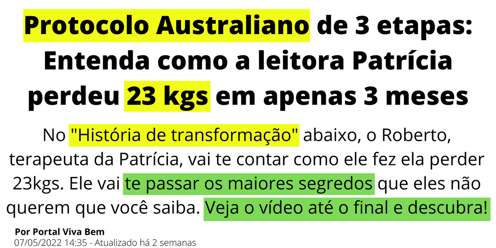

Dr. Paulo Bragança
O Dr. Paulo é Doutor em Endoscopia Digestiva e Gastroenterologia que descobriu que o o refluxo não é causado apenas pela H pylori. Quer entender melhor essa história? Então veja o vídeo até o final!